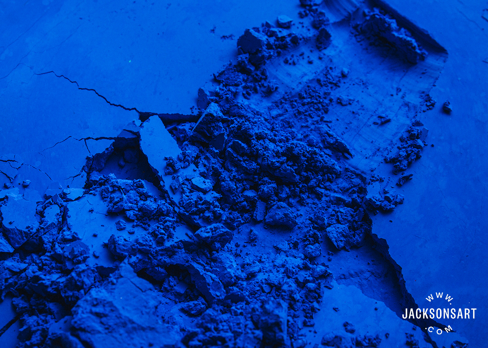

love letters to color

Unlike the structurally-created blues that exist in the natural world, synthetic blue is actually pretty easy to find in the constructed environment. After all, it’s not the world’s favorite calm and cool color for nothing. But over the last two years, supply chains seem to have come for blue as well.
A shortage of titanium dioxide, the pigment used to make titanium white is to blame. Why is titanium white relevant? Well, it’s a fundamental ingredient found in over a third of paints.
Multiple shades of blue at risk: AkzoNobel, a house-paint manufacturer in the Netherlands, has had difficulty sourcing the 50-60 ingredients required to create a single shade of blue in its industrial coatings. The dearth of titanium white alsoputs other, lighter shades of blue at risk.
The idea that blue paint might vanish entirely from the world seems absurd - and probably won’t (knowing 2022, wouldn’t place any bets though). But it is a good time to remember that most everything we see has been colored.
As Narayan Khandekar, curator of the Forbes Pigment Collection at Harvard Art Museum says, “A white wall is not just a white wall, it’s either a warm or cool white. Even car tires — each car tire has probably six pounds of carbon black in it to make it black instead of latex milky white. There are pigments used everywhere, even in ways that we take for granted.”